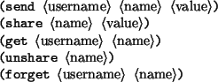

P -> "return" E ";" P -> E ";" P
E -> "#-1" | "#0" | "#1" // constants
E -> "this" | "args" "[" INT "]" // variables
E -> E ":" ID "(" [ EL ] ")" // verb invocation
E -> "create" "(" E ")" // object creation
E -> "set_verb_code" "(" E "," STR "," ESTR ")" // verb update
[Note: set_verb_code has different syntax and semantics in full MOO,
but a MOO database can be made to accept this syntax and act as
defined below with the help of a #0:bf_set_verb_code wrapper.]
EL -> E | E "," EL
ESTR -> E | STR
INT -> DIGIT+
STR -> "\"" CHAR* "\""
ID -> LETTER (LETTER|DIGIT)*
DB = Objnum -> (Objnum x Verbs)
Verbs = Str -> P
Objnum = Nat + { T }
Nat = set of natural numbers
Str = set of strings
Objects are numbered with unique natural numbers; T is "top", representing the top of the inheritance hierarchy (the parent of the root object(s)), which is expressible as "#1" (object negative-one). A database (DB) is a partial function over objnums such that DB(o) = <p, v> where p is the parent of o and v is the verb map of o. A verb map is a partial function mapping verb names (strings) to programs.
db0 \in DB
db0(0) = <1, {}>
db0(1) = <T, {}>
The starting database, db0, contains two objects, #0 and #1, the latter being the parent of the former. Neither object has any verbs. Note that we could just as well start with one object (or none if general objnums were expressible in the syntax), but this reflects the standard initial MOO database where #0 is the system object and #1 is the root object.
K -> halt K -> <[]; p, K> K -> <[]:id(e1...en), K> K -> <v:id(v1..vi-1,[],ei+1...en), K> K -> <create([]), K> K -> <svc([],s,es), K> K -> <svc(v,s,[]), K>
K is the set of continuations. A compound continuation is a partly-evaluated expression with a hole in it, plus a next continuation; thus, a continuation represents a stack of expressions waiting to be completed.
Config = (P + E + Objnum) x K x DB
A configuration is a triple whose first element is either a program or expression to be evaluated, or a value to be passed to the continuation.
eval : Config -> (Objnum x DB)
The evaluation function maps configurations to configurations. In the set of recursive definitions below, v stand for any element of Objnum, db stands for any element of DB, e stands for any element of E, p stands for any element of P, k stands for any element of K, id stands for any element of ID, s stands for any element of STR.
Evaluations of programs and expressions:
eval(e; p, k, db) = eval(e, <[]; p, k>, db) eval(return e, k, db) = eval(e, k, db) eval(\#-1, k, db) = eval(T, k, db) eval(\#0, k, db) = eval(0, k, db) eval(\#1, k, db) = eval(1, k, db) eval(e:id(e1...en), k, db) = eval(e, <[]:id(e1...en), k>, db) eval(create(e), k, db) = eval(e, <create([]), k>, db) eval(set_verb_code(e,s,es), k, db) = eval(e, <svc([],s,es), k>, db)
Applications of continuations to values:
eval(v, halt, db) = <v, db>
eval(v, <[]; p, k>, db) = eval(p, k, db)
eval(v, <[]:id(e1...en), k>, db) = eval(e1, <v:id([],e2...en), k>, db)
eval(v, <v0:id(v1...vi-1, [], ei+1...en), k>, db)
= eval(ei+1, <v0:id(v1...vi-1,v, [], ei+2...en), k>, db)
eval(v, <v0:id(v1...vn-1, []), k>, db)
= eval(p[v0/this,v1/args[1]...vn-1/args[n-1],vn/args[n]], k, db)
where lookup(db,v0,id) = p
[In English: p is the program code of the verb named id on the v0
object (or one of its ancestors); execute it, after replacing all
occurences of "this" with v0 and "args[i]" with the corresponding vi.]
eval(v, <create([]), k>, db) = eval(vnew, k, db + {vnew:<v,{}>})
where vnew = max(dom(db))+1
eval(v, <svc([],s,e), k>, db) = eval(e, <svc(v,s,[]), k>, db)
eval(v, <svc(v0,s,[]), k>, db) = eval(v0, k, dbnew)
where dbnew = svc(db,v0,s,return v;)
[This simulates a property with a verb that returns the value.]
eval(v, <svc([],s1,s2), k>, db) = eval(v, k, dbnew)
where dbnew = svc(db,v,s1,parse(s2))
lookup : (DB x Objnum x ID) -> P
The auxiliary function lookup takes an object and verbname and looks up the inheritance chain of the object until it finds a verb definition, returning the corresponding program.
lookup(db, v, id) = verbs(id) if v \in dom(db) and db(v) = <vp,verbs> and id \in dom(verbs) lookup(db, v, id) = lookup(db, vp, id) if v \in dom(db) and db(v) = <vp,verbs> and id \not\in dom(verbs) svc : (DB x Objnum x Str x P) -> DB
The auxiliary function svc takes an object, verbname, and program and adds the program as the verbname on the object, replacing the current program if there is one. Note that this does not go up the inheritance chain; it always modifies the object itself.
svc(db, v, s, p) = db - {v:<vp,verbs>} + {v:<vp,verbsnew>}
where verbsnew = verbs - s:pold + s:p
if db(v) = <vp,verbs> and (verbs(s) = pold or s \not\in dom(verbs))
parse : Str -> P
The auxiliary function parse converts strings to programs, using the syntax grammar given in the previous section.
Thus, starting from db0, a stream of input programs can be evaluated in sequence, producing a stream of results, modifying the database by side-effect as it runs. Note that "this" and "args[i]" are meaningless in top-level input programs; they are evaluated by substitution when a verb program is invoked.
eval(P1, halt, db) = <v, dbnew> ------------------------------- run(db,P1,P2...) = v,run(dbnew,P2...)